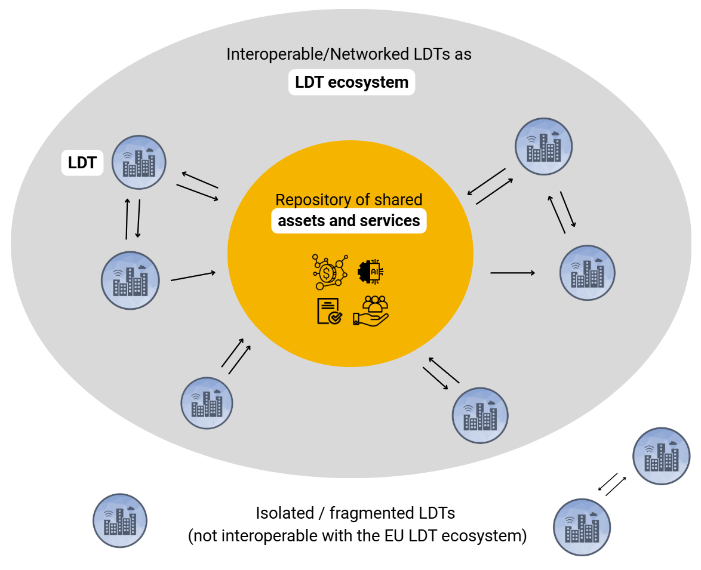
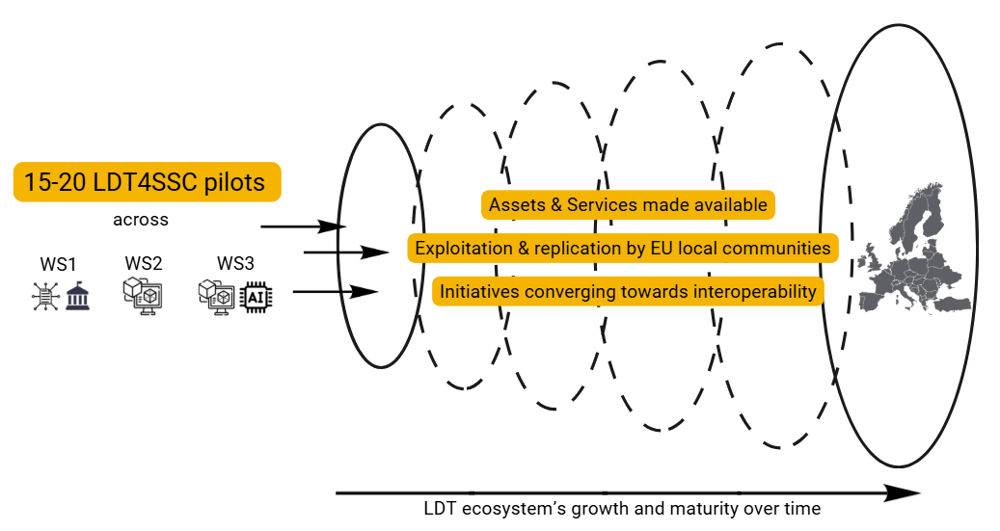
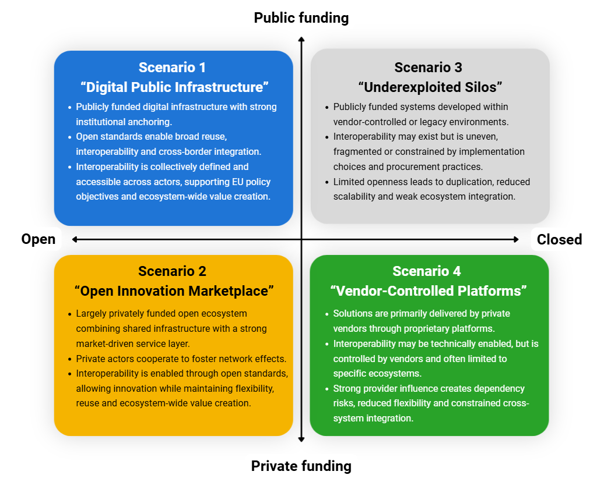
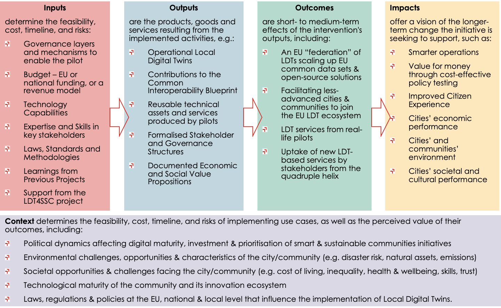

Strategy & Sustainability
Climate adaptation, mobility, energy optimisation and environmental resilience do not stop at municipal borders. Local Digital Twins could help communities tackle them together — but despite significant European investment, most LDTs remain isolated, and the landscape still lacks sustainable operational and governance models.
This section sets out what LDT4SSC is doing about that: the project's mission and vision, and the Framework and Strategy for Growth and Sustainability that analyses how a European LDT ecosystem can be grown and sustained.
-
Sustainability
Six dimensions — political, economic, social, technological, legal, environmental — and the drivers behind each.
-
Ecosystem diagnostics
Strengths, weaknesses, opportunities and threats for the ecosystem and for LDT4SSC's own assets.
-
Value & funding
Value creation and capture, seven open-source funding models, and the validation and certification landscape.
-
Strategic priorities
Eighteen capabilities and five priorities, with recommendations for pilots, for LDT4SSC and for the wider ecosystem.
Mission, vision & values
LDT4SSC is a Digital Europe Programme project contributing to two Commission goals: improving the digitalisation of Europe, and improving citizens' lives through sustainability and environmental protection.
It builds on and integrates outputs from related EU-funded work — the European data space for smart communities (DS4SSCC), the EU LDT Toolbox, Living-in.EU, CitCom.ai and SIMPL. These initiatives are described in the Smart Communities Ecosystem section.
Mission
To build a scalable and interoperable ecosystem of Local Digital Twins to empower European local communities with opportunities to share and reuse (real-time) data, advanced AI capabilities, simulation and federated services. These assets and services foster data-driven decision-making, improved public value creation and resilient, equitable urban and community development.
Vision — a resilient, inclusive and interconnected European LDT ecosystem, where:
- LDTs operate as core public digital infrastructure;
- stakeholders from local communities share data, services and other assets seamlessly;
- integration with the EU LDT Toolbox fosters replication of LDT4SSC assets and supports scalability;
- SIMPL and the LDT CitiVERSE EDIC offer opportunities for long-term federation;
- AI-powered LDT services support the EU's green and digital transition, strengthening Europe's competitiveness and digital sovereignty.
Values
| Value | Scope |
|---|---|
| Sustainability through innovation and openness | Economic, environmental and social sustainability through open standards, data-sharing and fair competition in AI and LDT-based services |
| Inclusiveness, collaboration & co-creation | Communities of all sizes and maturity levels, through cross-border, cross-sectoral quadruple-helix partnerships |
| Resilience & competitiveness | European digital sovereignty, reduced reliance on foreign technologies, quality of life |
| Trust & ethics | Privacy, security, EU regulatory compliance, ethical AI that is economically viable and societally sustainable |
The Framework and Strategy
Isolation carries a cost: without interoperability there is no replication, no network effects, and little collaboration between communities facing the same problems.
The Framework and Strategy for Growth and Sustainability is the project's plan for growing and sustaining a European LDT ecosystem, defined as an open and interoperable collaboration framework for LDT initiatives, used and sustained by multi-stakeholder communities to address common local and regional challenges.
It serves three purposes:
- Guiding pilots in designing sustainable LDT implementations and sharing what they build;
- Aligning LDT4SSC activities and assets towards long-term ecosystem development;
- Informing external stakeholders and policymakers on the conditions a sustainable European LDT ecosystem requires.
The ecosystem in question
An LDT ecosystem is what emerges when individual twins become interoperable and draw on a shared repository of assets and services. Twins that stay isolated remain outside it.

LDT4SSC's role is to grow that ecosystem from 15–20 pilots into something EU-wide, through assets and services that other communities can take up.

Dimensions of sustainability
In data-intensive, multi-stakeholder community systems, sustainability goes beyond technical and financial upkeep. It covers the conditions that let value reach all stakeholders, the integration of LDTs into governance and service delivery, societal acceptance, and alignment with public values and legal frameworks.
Drawing on the PESTLE framework, the strategy sets out six dimensions, each with drivers that must be sufficiently in place for an LDT to function, generate value and keep evolving.
Stakeholder rankings
At the February 2026 Stakeholder Forum, social and civic sustainability was ranked the most important dimension by 78% of respondents. Within individual dimensions, political leadership (60%) and clear value propositions (58%) led.
Rankings come from 9–18 responses among 70 attendees, so they indicate direction rather than settled weighting. They will be refined through analysis of the pilots.
The capacity of governance systems at local, national and EU levels to provide stable support, coherent policies and enabling frameworks.
- Political leadership through resource allocation and enabling frameworks — shaping how priorities become regulation, institutional arrangements and investment decisions. Ranked first by 60% of respondents.
- Sustained buy-in and multi-level support, securing initial funding and institutional backing for long-term upkeep, with cross-departmental coordination.
- Policy coherence across political cycles — embedding LDTs into statutory planning and multi-annual funding reduces exposure to political turnover. Alignment with the Interoperable Europe Act, Green Deal and Digital Decade helps.
Financial viability, resource mobilisation, the logic for value creation and capture, and the organisational capacity to operate, adapt and scale.
- Clear value propositions with measurable public and economic outcomes, rather than abstract innovation goals. Ranked first by 58% of respondents.
- Market intelligence and stakeholder engagement (25%).
- Internal capacity and integration into organisational workflows (17%), reducing dependency on external providers.
- Cost-benefit planning over the full lifecycle — initial deployments are often grant-funded while long-term operational costs are underestimated. See EU guidance on life-cycle costing.
- Funding continuity through diversified financing. See value and funding models.
How far LDTs reflect community needs, inclusion, legitimacy, trust and equitable participation — and avoid reinforcing socio-economic or socio-technical divides.
Ranked the most important dimension overall by 78% of Stakeholder Forum respondents. Covers societal acceptance, social well-being and cohesion, and inclusive engagement.
Citizen co-production is identified as a current weakness of the ecosystem — see diagnostics.
The technical foundations keeping an LDT operable and connectable: open standards, modular architectures, data quality and provenance, and avoidance of vendor lock-in.
Anchored in MIMs Plus, NGSI-LD and FAIR principles. The LDT Interoperability Blueprint, the technical resources and the implementation guidance do most of the work here.
Frameworks enabling data access and sharing — including across jurisdictions — and the capacity to adapt to regulatory change, embedding compliance and ethics by design.
In scope: the AI Act, Data Act, Data Governance Act, Cyber Resilience Act, NIS2 Directive and eIDAS 2.0.
Regulatory compliance by design was ranked the leading legal consideration.
The footprint of LDT infrastructure itself, and the capacity to build responsible digital practices — including eco-design and ongoing monitoring — into development and operations.
See the General Policy Framework for the Ecodesign of Digital Services.
Four possible futures
To test the strategy against uncertainty, LDT4SSC used scenario planning. Two drivers were selected as decisive, because they shape ownership, value creation and capture, scalability and ecosystem dynamics:
- Funding model — public-driven or private-driven
- Technological choices — open or closed systems
The four scenarios describe plausible states of the ecosystem around 2033–2034.

Open systems, public funding. LDTs become shared digital public infrastructure, governed and financed primarily by the public sector. Open standards support cross-border collaboration and reuse, letting LDTs act as part of a broader network of networks — what the ITU describes as digital public infrastructure for cities and communities.
Limits. Reliance on public funding brings exposure to political prioritisation and heavy demand on public budgets. Avoiding the project → funding ends → ecosystem declines trap needs long-term commitment and funding continuity for widely used components.
A preferred long-term direction
Aligns with the vision of LDTs as shared infrastructure supporting public value and European digital sovereignty — but a target state, requiring strong governance, sustained funding and active participation.
Open systems, private funding. Private actors sustain open and interoperable infrastructures to scale service delivery and enable network effects. Open standards lower entry barriers for SMEs, startups and research organisations.
Limits. Multiple independent actors must jointly invest, so governance must define roles, cost-sharing and value distribution — otherwise dominant participants steer the ecosystem. Early scaling faces a chicken-and-egg dynamic: commitment depends on visible returns, which depend on collective adoption.
Also a preferred pathway
Supports European competitiveness and growth, provided openness is secured through governance.
Closed systems, public funding. LDTs are publicly funded but built in closed environments shaped by proprietary solutions, legacy systems or weak interoperability requirements. Interoperability exists but is uneven and vendor-specific.
This describes many EU communities today: authorities procure solutions that work for individual use cases but stay fragmented, constraining reuse and cross-border collaboration while duplicating cost.
Undesirable but plausible
Likely wherever interoperability and openness are not actively enforced — hence the case for interoperability-by-design, open standards and coordinated governance in funding, procurement and implementation.
Closed systems, private funding. Solutions are delivered and shaped by private vendors through proprietary platforms. Efficiency and rapid deployment are genuine advantages.
Limits. Interoperability is vendor-controlled and conditional on licensing or commercial agreements. Vendor lock-in raises long-term costs, reduces flexibility and limits integration across providers.
A realistic risk to manage
Private-sector participation is essential for innovation, but needs balancing with open standards, data sharing and procurement that prevents dependency on single vendors. The institutional and technical capacity of public actors largely determines how far lock-in takes hold.
Three levels of sustainability
Sustainability is not a fixed stage of maturity but a set of conditions. The strategy assesses capability at three interdependent levels.
| Level | Focus | Conditions |
|---|---|---|
| Individual LDT | Operational viability in its local context | Embedded in governance and organisational processes; delivers value to stakeholders; minimum technical and non-technical interoperability; appropriate legal framework |
| LDT ecosystem | Coordination and collective value creation | Value shared, scaled and reinforced across actors; reuse, replication and collaboration enabled; governance, funding and technical approaches aligned |
| LDT4SSC assets & services | Sustaining the shared tools | Clear governance of outputs; agreed long-term maintenance; adoption supported through training and capacity-building |
If you are an LDT4SSC pilot
The strategy maps 18 sustainability-supporting capabilities directly against the open-call requirements (Rq) and recommendations (Rc) in your call text.
Impact assessment
The ambition behind promoting LDTs and working towards their federation is sustainable local development. The impact assessment framework serves two purposes: pilot-level evaluation across 15–20 pilots in three work strands, and programme-level evaluation of scalability, interoperability and long-term sustainability.

KPIs draw on the DS4SSCC-DEP Impact Assessment Framework and the CitCom.ai European AI Market Report, and the framework is designed to evolve with stakeholder feedback and implementation experience.
Download the frameworks
Framework & Strategy for Growth and Sustainability Impact Assessment Framework
The Framework & Strategy is a first edition (May 2026), under review by the European Commission and therefore tentative. A second edition is due by November 2028. Authored by TalTech with LIST, Cerema and Libelium; licensed CC BY-NC-ND 4.0.